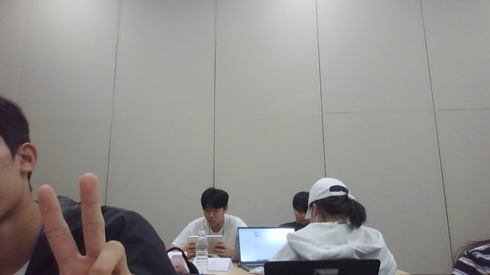

<!doctype html><meta charset="utf-8"><meta name="viewport" content="width=device-width,initial-scale=1"><title>부산 비치체크</title><style>body{margin:0;background:#f5f8fb;color:#102a43;font-family:system-ui,sans-serif}.app{max-width:680px;min-height:100vh;margin:auto;padding:18px;background:#fff}.back{border:0;background:none;color:#1976d2;font-size:15px}h1{margin:15px 0 3px}.small{font-size:12px;color:#64748b}.photo{height:215px;margin:15px 0 8px;border-radius:16px;background:center/cover #def}.grid{display:grid;grid-template-columns:1fr 1fr;gap:9px}.card,.food,.ai,.review{padding:13px;border-radius:14px;background:#e8f4ff}.score{font-size:25px;font-weight:800;color:#1976d2}.orange{color:#d96300}.card h2,.ai h2,.food h2,.reviews h2{margin:3px 0;font-size:15px}.details{margin-top:8px;padding:0;border:0;background:none;color:#1976d2;font-size:12px;text-decoration:underline}.weather-details{display:none;margin-top:10px;padding:12px;border:1px solid #dbe8f4;border-radius:12px;font-size:13px;line-height:1.8}.weather-details.show{display:block}.food,.ai,.reviews{margin-top:15px}.food{background:#fff5e5}.food a{color:#b75a00;font-weight:700}.ask{display:flex;gap:7px}.ask input{min-width:0;flex:1;padding:10px;border:1px solid #b8d6ed;border-radius:10px;font:inherit}.ask button{border:0;border-radius:10px;background:#1976d2;color:#fff;padding:0 14px;font-weight:700}.answer{display:none;margin-top:9px;padding:10px;border-radius:10px;background:#fff;font-size:13px;line-height:1.55}.answer.show{display:block}.reviews{background:none;padding:0}.upload{width:100%;padding:11px;border:1px dashed #92b6d5;border-radius:12px;background:#f6fbff;color:#1976d2;font-weight:700}.review{margin-top:9px;background:#f5f8fb}.review p{font-size:13px}.photos{display:grid;grid-template-columns:1fr 1fr;gap:7px;margin-top:9px}.photos img{width:100%;height:140px;object-fit:cover;border-radius:10px}@media(max-width:420px){.grid{grid-template-columns:1fr}}</style><main class="app"><button class="back" onclick="history.back()">‹ 지도로 돌아가기</button><h1 id="name"></h1><p id="summary" class="small"></p><div id="photo" class="photo"></div><section class="grid"><div class="card"><div id="weather" class="score"></div><h2>날씨점수</h2><span class="small">/ 10점</span><br><button id="weatherToggle" class="details" type="button">날씨요소 자세히 보기</button></div><div class="card"><div id="crowd" class="score orange"></div><h2>혼잡도 점수</h2><span class="small">/ 10점</span><p id="crowdInfo" class="small"></p></div></section><div id="weatherDetails" class="weather-details"></div><section class="food"><h2>주변 맛집</h2><a id="food" target="_blank">지도에서 주변 맛집 찾기 ›</a></section><section class="ai"><h2>AI 해수욕장 도우미</h2><p class="small">준비물, 방문 시간, 수영 적합성, 날씨와 혼잡도 등을 물어보세요.</p><div class="ask"><input id="question" placeholder="예: 지금 수영하기 괜찮을까?"><button id="ask" type="button">질문</button></div><div id="answer" class="answer" aria-live="polite"></div></section><section class="reviews"><h2>인증샷 & 이용자 후기</h2><p class="small">해수욕장에서 남긴 사진과 후기를 공유해 보세요.</p><input id="checkinInput" type="file" accept="image/*" multiple hidden><button id="upload" class="upload" type="button">＋ 인증샷과 후기 올리기</button><div id="reviews"></div></section></main><script>const q=new URLSearchParams(location.search),name=q.get('beach')||'해운대 해수욕장',people=Number((q.get('people')||'0').replace(/[^\d]/g,'')),photo=(q.get('photo')||'https://beachsearcher.fr/images/beaches/410201106/KR201106.jpg').replaceAll('%26','&'),temp=q.get('temp')||'29°C',wind=q.get('wind')||'3.1 m/s';const data={'해운대 해수욕장':[3000,'25.4°C','66%','680 W/m²'],'광안리 해수욕장':[3500,'25.1°C','70%','620 W/m²'],'송도 해수욕장':[1800,'24.8°C','64%','710 W/m²'],'다대포 해수욕장':[2000,'24.5°C','62%','690 W/m²']}[name]||[3000,'25.4°C','66%','680 W/m²'],area=data[0],water=data[1],humidity=data[2],sun=data[3],weather=Math.max(0,10-Math.abs(parseFloat(temp)-27)*.5-Math.max(0,parseFloat(wind)-3)*.9-Math.abs(parseFloat(water)-25)*.6-Math.max(0,parseFloat(humidity)-65)*.08-Math.max(0,parseFloat(sun)-700)*.004),crowd=Math.min(10,people/(area*.6)*10);document.title=name;document.getElementById('name').textContent=name;document.getElementById('summary').textContent='기온 '+temp+' · 바람 '+wind+' · '+people.toLocaleString()+'명';document.getElementById('photo').style.backgroundImage='url("'+photo+'")';document.getElementById('weather').textContent=weather.toFixed(2);document.getElementById('crowd').textContent=crowd.toFixed(2);document.getElementById('crowdInfo').textContent=people.toLocaleString()+'명 · '+area.toLocaleString()+'㎡ 관측 구역';document.getElementById('weatherDetails').innerHTML='<b>현재 날씨요소</b><br>기온 '+temp+' · 바람 '+wind+'<br>수온 '+water+' · 습도 '+humidity+'<br>일사량 '+sun;document.getElementById('weatherToggle').onclick=()=>{const d=document.getElementById('weatherDetails'),open=d.classList.toggle('show');document.getElementById('weatherToggle').textContent=open?'날씨요소 닫기':'날씨요소 자세히 보기'};document.getElementById('food').href='https://map.naver.com/p/search/'+encodeURIComponent(name+' 맛집');const reviews=document.getElementById('reviews');if(name==='광안리 해수욕장')reviews.innerHTML='<article class="review"><b>범수 · 인증샷</b><p>인증샷 남기고 갑니다!</p><div class="photos"></div></article>';document.getElementById('upload').onclick=()=>document.getElementById('checkinInput').click();document.getElementById('checkinInput').onchange=e=>{const files=[...e.target.files];if(!files.length)return;const urls=files.map(f=>URL.createObjectURL(f));reviews.insertAdjacentHTML('afterbegin','<article class="review"><b>나 · 새 인증샷</b><p>방금 올린 인증샷입니다.</p><div class="photos">'+urls.map(u=>'').join('')+'</div></article>');e.target.value=''};function reply(){const input=document.getElementById('question'),answer=document.getElementById('answer'),text=input.value.trim();if(!text){answer.textContent='AI 도우미: 질문을 입력해 주세요.';answer.classList.add('show');return}const t=text.toLowerCase();let msg='현재 기온은 '+temp+', 바람은 '+wind+', 수온은 '+water+'입니다. 날씨점수는 '+weather.toFixed(2)+'점, 혼잡도는 '+crowd.toFixed(2)+'점이에요. ';if(t.includes('수영')||t.includes('물놀이'))msg+=parseFloat(water)>=23&&parseFloat(wind)<=5?'수온과 바람 조건은 물놀이에 무난하지만, 입수 전 현장 안전요원 안내와 파도 상태를 꼭 확인하세요.':'바람 또는 수온 조건이 편안하지 않을 수 있어 물놀이보다는 해변 산책을 권합니다.';else if(t.includes('언제')||t.includes('시간')||t.includes('가도'))msg+=crowd>=7?'혼잡도가 높은 편이라 오전 이른 시간이나 해 질 무렵 방문을 추천합니다.':'현재 혼잡도는 비교적 낮아 지금 방문해도 괜찮습니다.';else if(t.includes('준비')||t.includes('챙겨'))msg+='수건, 물, 자외선 차단제, 여벌 옷을 챙기고 파도·기상 특보를 확인해 주세요.';else if(t.includes('맛집')||t.includes('식당'))msg+='위의 주변 맛집 링크에서 최신 영업 정보와 길찾기를 확인할 수 있습니다.';else msg+='원하시면 수영 가능 여부, 방문 추천 시간, 준비물, 맛집을 구체적으로 물어보세요.';const row=document.createElement('div');row.style.marginTop='8px';row.innerHTML='<b>질문:</b> '+text.replace(/</g,'&lt;')+'<br><b>AI 도우미:</b> '+msg;answer.appendChild(row);answer.classList.add('show');input.value='';input.focus()}document.getElementById('ask').onclick=reply;document.getElementById('question').onkeydown=e=>{if(e.key==='Enter'){e.preventDefault();reply()}};</script>
